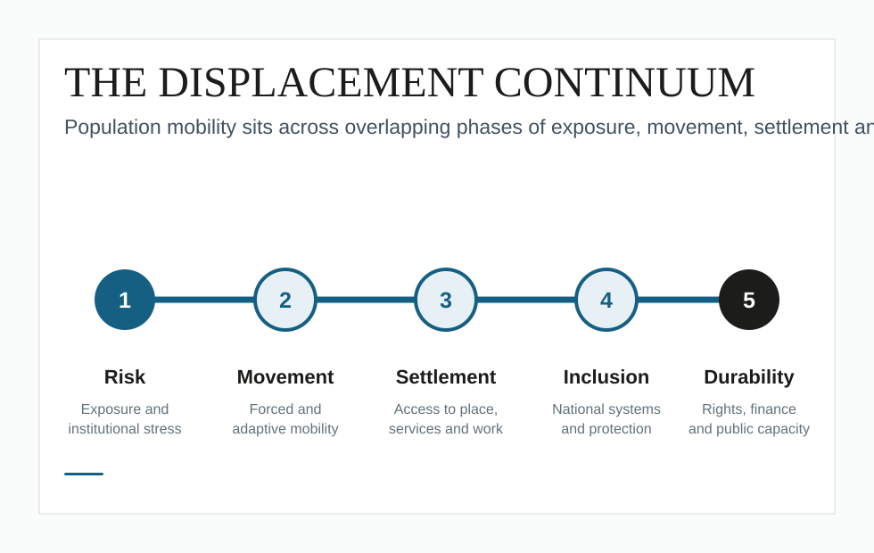
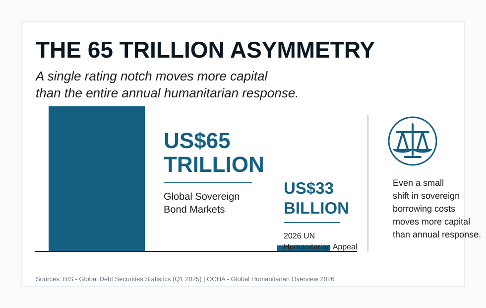

Governance and institutions
Analysis of mandates, coordination arrangements, legal frameworks and state systems shaping displacement response.
Governance | Institutions | Public finance
Research and analysis on displacement, governance, social protection and public finance.
Displacement Policy is an independent platform examining how states, international institutions and development actors respond to displacement and population mobility. It focuses on the institutional, fiscal and governance systems required to move beyond short-term humanitarian response toward sustainable inclusion.
Core Themes
Displacement is not only a humanitarian condition. It is a test of public systems, fiscal choices and institutional design.
Analysis of mandates, coordination arrangements, legal frameworks and state systems shaping displacement response.
Research on how displaced populations connect to national systems, services, rights and durable pathways.
Work on the recurrent costs, budget choices and financing instruments required for sustained policy commitments.
Featured Analysis
Book chapter argument
Displacement in Southeast Asia is better understood as a continuum of mobility, vulnerability and state response, rather than as a sequence of isolated humanitarian events.
Explore publications
Fiscal architecture brief
A single sovereign-rating notch can move more capital than the entire annual humanitarian response. Fiscal architecture, not only aid volume, determines the scale of displacement inclusion.
Download PDF
Platform
Displacement Policy was founded by Samuel Cheung, a former senior UNHCR official with experience in internal displacement, protection, solutions and inter-agency coordination. The platform builds on operational and policy experience to examine displacement as a governance and institutional challenge.
Full bio placeholder. This space can later include selected roles, areas of expertise, publications, and advisory experience.
Publications
Policy Brief | Date placeholder
Analysis of how institutional arrangements shape the transition from short-term response to sustainable inclusion.
Working Paper | Date placeholder
Explores how state systems absorb displacement pressures generated by development, infrastructure and mobility transitions.
Policy Brief | Date placeholder
Examines the role of national protection systems in supporting displaced populations and host communities.
Policy Brief | Date placeholder
Considers how public finance systems can account for the sustained costs of displacement inclusion.
Advisory
Displacement Policy provides research and advisory support to governments, international organizations, development banks, research institutions and civil society actors.